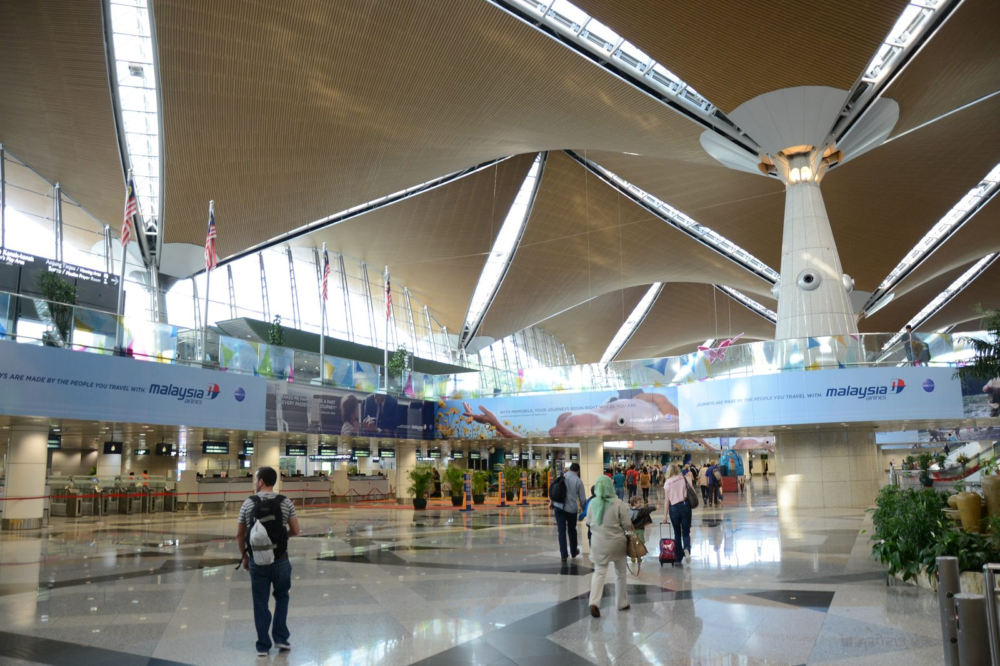
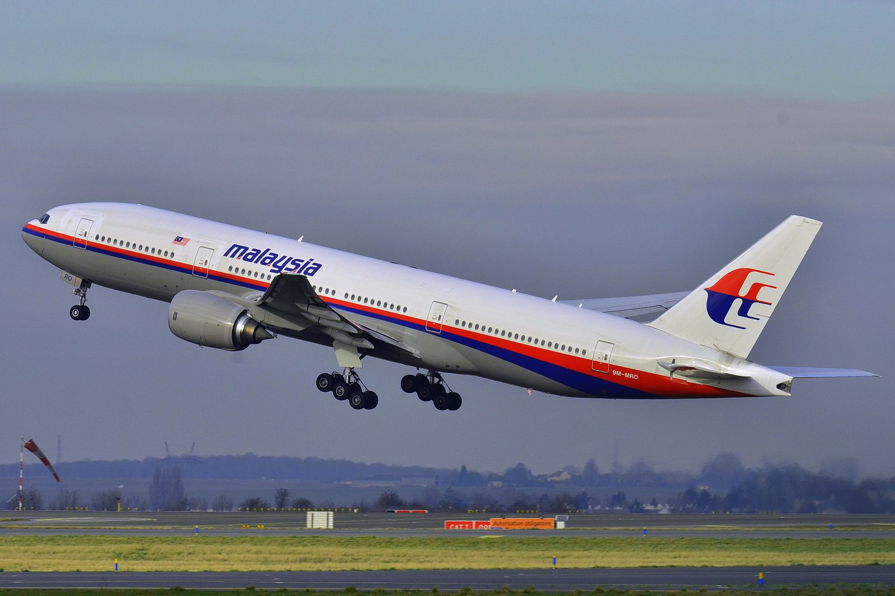
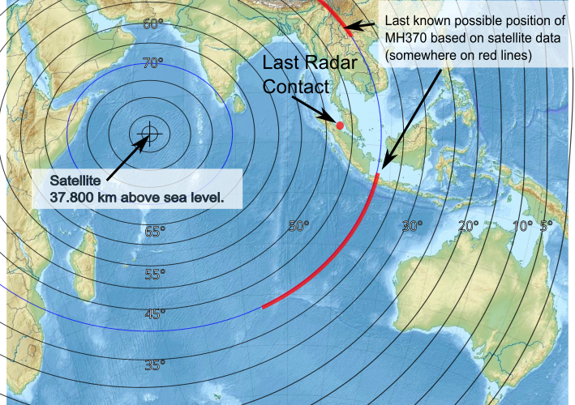
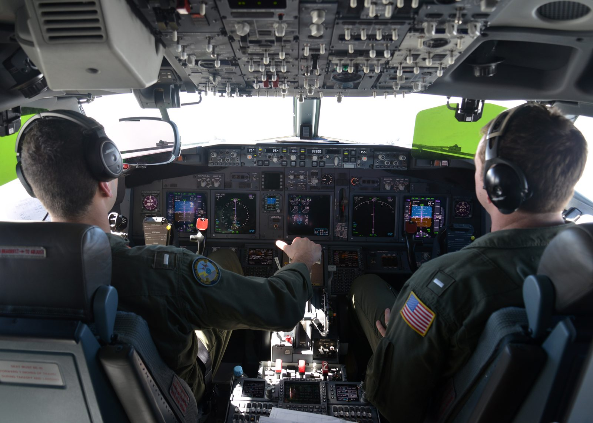
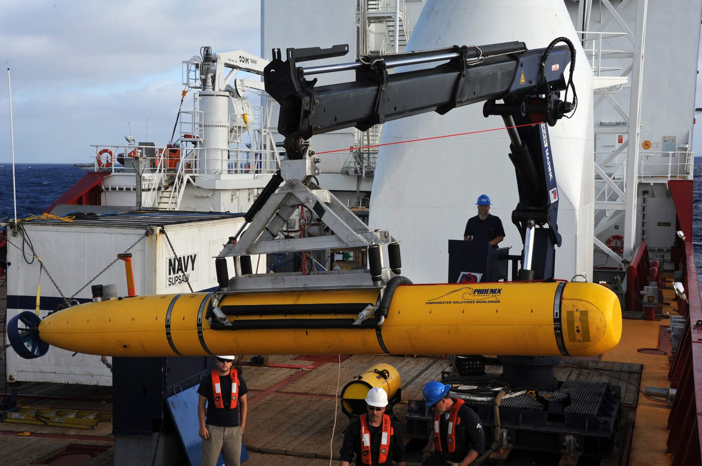

Malaysia Airlines Flight 370 lifts off from Kuala Lumpur just after midnight, climbing into a routine six-hour red-eye to Beijing with 239 people aboard. Thirty-eight minutes later, on a calm night with no distress call and no warning, it vanishes from air traffic control's screens. Satellite data would later show it kept flying, alone and unresponsive, for nearly seven more hours. More than a decade on, most of the aircraft has never been found, and 239 families still have no final answer.
All times in this case file are Malaysian Time (MYT, UTC+8) unless otherwise noted. MH370 was a codeshare flight operated by Malaysia Airlines under its own flight number and as China Southern Airlines flight CZ748, one of the busiest and most routine routes in the region.

MH370 pushed back from Kuala Lumpur International Airport just after midnight on March 8, 2014, cleared for a scheduled 00:35 departure and airborne at 00:41. Aboard were 227 passengers and 12 crew — 239 people in total, representing 14 nationalities. The largest single group, 153 passengers, were Chinese nationals; 38 were Malaysian. Among the passengers were a group of Malaysian and Chinese calligraphers and artists returning from an exhibition, a young couple who had just gotten married, and two Malaysian technicians who had worked on the Boeing 777 program.
In command was Captain Zaharie Ahmad Shah, 53, a veteran Malaysia Airlines pilot with 18,365 flight hours — among the most experienced captains in the airline's fleet, and a Boeing 777 flight simulator enthusiast known for building his own home simulator rig. Beside him sat First Officer Fariq Abdul Hamid, 27, who had roughly 2,763 flight hours and was on this flight completing his final supervised check flight on the 777 before being cleared to fly the type unsupervised. Ten cabin crew completed the crew complement.
The aircraft itself, registration 9M-MRO, was a Boeing 777-200ER delivered new to Malaysia Airlines in 2002 — one of the most reliable widebody airliners ever built, with an in-service safety record that was, at the time, essentially spotless. Nothing about the aircraft's maintenance history, and nothing in the routine pre-departure checks, gave any indication of what was about to happen.
The flight plan was unremarkable: climb to cruise altitude, track northeast over the South China Sea toward Vietnamese airspace, then on across China to Beijing Capital International Airport, a journey of roughly six hours. For the first thirty-eight minutes, it was exactly that — a routine widebody climb-out on a clear night, indistinguishable from thousands of other flights that depart Kuala Lumpur every year.

What happened over the next few minutes is documented almost entirely through secondary means — radar returns, satellite data, and one ambiguous radio call — because no distress signal, no emergency squawk and no mayday call was ever transmitted.
MH370 departs normally and begins its scheduled climb toward the South China Sea, cleared on a routine airway toward the handover point into Vietnamese air traffic control.
The aircraft's Aircraft Communications Addressing and Reporting System (ACARS) sends its last scheduled data transmission — routine engine and systems performance data, automatically relayed via satellite. Nothing in it suggests anything unusual.
As Kuala Lumpur Air Traffic Control hands the flight off toward Ho Chi Minh City control, a voice from the cockpit acknowledges with the flight's final radio transmission — an entirely ordinary sign-off, giving no hint of anything wrong. See below for who investigators believe said it.
MH370 never checks in with Ho Chi Minh control. Around this same window, the aircraft's transponder — the device that broadcasts identity and altitude to secondary radar — stops transmitting. The aircraft disappears from civilian air traffic control screens entirely, roughly over the gap between Malaysian and Vietnamese airspace.
For more than half an hour, air traffic controllers on both sides of the handoff do not realize anything is wrong — a well-documented gap in ATC procedure at the time meant neither Malaysian nor Vietnamese control immediately raised an alarm. See The Turn below for what military radar shows happened next.
Good night Malaysian three seven zero.
— Final radio transmission from MH370's cockpit, 01:19 MYT, acknowledging handoff to Ho Chi Minh controlCivilian radar lost the aircraft entirely once its transponder stopped transmitting. But Malaysia's military radar — which tracks aircraft by primary radar returns alone, without needing a transponder reply — kept a “blip” consistent with MH370 in view for another hour, and what it recorded was the single strangest fact in this entire case: the aircraft didn't continue toward Beijing. It turned around.
Sometime around the same window its transponder went dark, MH370 made a sharp turn to the left — reversing course, away from Vietnam and back across the Malay Peninsula, roughly retracing its outbound path near where it had started. Malaysian military radar, reviewed only in the days after the disappearance once officials realized what the returns showed, tracked the aircraft crossing back over northern Malaysia and out over the Strait of Malacca, the waterway separating Malaysia from Sumatra, Indonesia.
Preliminary radar data, reported by the New York Times in 2015 and never fully confirmed in Malaysia's official reports, suggested the aircraft may have climbed as high as 45,000 feet — above the Boeing 777's certified ceiling — shortly after the turn, then later descended to around 23,000 feet before climbing again toward a more normal cruise altitude. If accurate, that profile is difficult to explain as anything other than deliberate manual control; investigators have never officially confirmed either the climb or the descent as fact, and we've flagged that distinction here rather than present a leaked, unconfirmed detail as settled.
The turn back was, according to the investigation, consistent with deliberate manual input on the flight controls — not the signature of a sudden catastrophic failure.
— Summary consistent with findings in Malaysia's Safety Investigation Report, 2018MH370's confirmed radar track ends over the Strait of Malacca at 02:22. Everything south and west of that point — the long arc into the Southern Indian Ocean — is reconstructed from satellite data alone, not radar, and no one has ever visually confirmed the aircraft's actual path across it. See Seven Hours below.
At 02:22, MH370 disappeared from military radar over the Strait of Malacca and was, by every visual and radar measure available to anyone on the ground, simply gone. It was not. For nearly seven more hours, the aircraft kept flying — and the only reason anyone knows that is a piece of equipment nobody expected to matter at all.
MH370's satellite data unit had been disconnected from ACARS messaging, but it was never fully powered off — and it continued to perform a routine, automatic, largely meaningless-seeming function: every hour, it exchanged a brief digital “handshake” with an Inmarsat satellite parked in geostationary orbit over the Indian Ocean, confirming the terminal was still logged on to the network. No content, no location, no message — just a ping and a reply.
British satellite operator Inmarsat, working with the UK's Air Accidents Investigation Branch, realized these handshakes could be analyzed using the signal's burst timing offset (how long the round-trip took) and its Doppler frequency shift (how the signal's frequency changed based on the satellite's and aircraft's relative motion). Applied to all six full handshakes recorded between 01:11 and 08:11, plus a final partial handshake at 08:19 consistent with the satellite terminal restarting after fuel exhaustion and engine flameout, the analysis produced a series of possible aircraft positions at each ping — arcs of a circle, not single points.

Cross-referencing that Doppler analysis against the 777's known performance envelope and fuel load, and ruling out a northern corridor that would have carried the aircraft across heavily radar-monitored Central Asian airspace undetected, investigators concluded MH370 almost certainly flew south — down a long, curving track over the open Indian Ocean, running roughly parallel to nothing, crossing no shipping lanes, seen by no one, until its fuel ran out. The final handshake's arc, known as the “seventh arc,” became the backbone of every subsequent search: a curved line across the Southern Indian Ocean where the aircraft most likely made its last transmission, shortly before impact.
What followed became the largest and most expensive search in aviation history. It has still, after more than a decade, not found the aircraft.
The first phase, in March 2014, was a surface and air search across the South China Sea and Strait of Malacca — the visible parts of MH370's confirmed track — involving aircraft and ships from 26 countries before the Inmarsat analysis redirected everything toward the Southern Indian Ocean. Once the search shifted there, Australia's Transport Safety Bureau (ATSB) took over coordination on behalf of a tripartite agreement between Malaysia, Australia and China.
From 2014 to January 2017, ships towing side-scan sonar and, later, the autonomous underwater vehicle Bluefin-21, methodically mapped roughly 120,000 square kilometers of seafloor along the seventh arc — much of it previously uncharted ocean floor, including underwater mountain ranges never before surveyed in detail. The effort cost an estimated A$200 million, funded primarily by Australia and Malaysia. It found shipwrecks, geological formations, and nothing from MH370. On January 17, 2017, the tripartite governments suspended the search.


In January 2018, private marine exploration firm Ocean Infinity resumed the hunt under a “no find, no fee” contract with the Malaysian government — meaning Malaysia would only pay if the wreckage was actually located. Using a fleet of autonomous underwater vehicles deployed from the vessel Seabed Constructor, Ocean Infinity covered roughly 112,000 square kilometers, including areas outside the original search zone, before the contract concluded in May 2018. It, too, found nothing.
The search has not stayed closed. See Still Missing below for what's happened since — including a renewed Ocean Infinity search that was still actively working the seafloor as recently as January 2026.
The underwater search never recovered a single piece of MH370. Everything physical that's ever been confirmed from this aircraft washed up thousands of miles away, on beaches most of the world had never heard of.
On July 29, 2015 — nearly a year and a half after the disappearance — a beach cleanup crew on Réunion Island, a French territory in the Indian Ocean east of Madagascar, found a barnacle-encrusted section of aircraft wing washed ashore. French investigators identified it as a flaperon, a control surface from the trailing edge of a Boeing 777 wing. Malaysia's then-Prime Minister Najib Razak announced on August 5, 2015 that investigators had “conclusively confirmed” the part belonged to MH370, based on a unique component serial number matched by Boeing to the aircraft's maintenance records. It remains the first, and for a long time the only, confirmed physical trace of the aircraft ever found.
Over the following two years, a scattered trail of roughly 27 further debris fragments — cabin panels, an engine cowling, a stabilizer section — washed up along the coastlines of Mozambique, Tanzania, South Africa, Madagascar and Mauritius. Of those, three (including the flaperon) have been officially and positively confirmed as MH370 wreckage; investigators consider around 17 more “highly likely” to be from the aircraft, based on materials and construction consistent with a 777, though without a matching serial number to prove it beyond doubt. Drift modelling on the barnacle growth and ocean currents affecting these pieces has, if anything, reinforced the Inmarsat-derived search corridor rather than contradicted it.
It is very important for the families, but for the search too — it will help to know where the plane is, and how it ended up in the ocean.
— Jean-Paul Troadec, former head of France's BEA air accident investigation bureau, on the flaperon discovery, 2015No official investigation has ever assigned a definitive cause to MH370's disappearance. In its absence, a handful of theories have dominated public and investigative discussion for over a decade. We present the leading ones here as they've actually been argued, not as a verdict.
The sequence of events — ACARS disconnected, then the transponder, then a deliberate turn back across the peninsula, all within a tight window — is, in the view of most investigators who've studied the case, difficult to reconcile with an instantaneous mechanical failure. Malaysia's 2018 Safety Investigation Report stopped short of naming a person or motive, but noted the turn was consistent with manual control inputs rather than an automated or catastrophic event.
Because he was the aircraft's most senior pilot and the flight's commander, public speculation fixed on Captain Zaharie almost immediately — including now-discredited claims about his personal life and political views. Malaysian police investigated his flight simulator, financial records and personal history extensively and found, in their own public statements, no conclusive evidence of a plan, a motive, or a note. No court, investigation or report has ever proven he — or anyone else aboard — deliberately caused the disappearance. He deserves to be remembered as a father and a 33-year airline veteran unless and until real evidence says otherwise.
Some researchers have proposed a scenario similar to Helios 522: a sudden depressurization or onboard fire disabled the crew through hypoxia, while the aircraft continued flying on autopilot on whatever heading it held at the moment of incapacitation. This theory struggles to explain the initial turn back toward Malaysia and the subsequent track changes, which most analyses read as requiring active human control after the disappearance began — though its proponents argue those inputs could have been made before hypoxia fully set in.
Investigators examined every passenger and crew member's background for ties to hijacking or terrorism, including two Iranian passengers traveling on stolen passports who generated early alarm and were subsequently cleared of any connection to the disappearance. No hijacking claim, ransom demand or credible group has ever surfaced in over a decade, and no evidence of forced cockpit entry or a struggle has been found — largely because no cockpit has been found at all.
A small number of commentators have speculated MH370 was mistakenly shot down during a military exercise and the search steered elsewhere to avoid the resulting fallout. No radar, satellite, radiological or debris evidence from any of the many governments involved in the search — several of whom had no incentive to protect Malaysia's or any other nation's reputation — has ever supported this, and the Inmarsat handshake data, independently verified by outside academics, is inconsistent with an abrupt destruction near the point where such an event would have occurred.
A catastrophic fire or electrical fault, of the kind that has caused other airliner losses, remains possible in principle. It is harder to reconcile with the specific, multi-stage sequence of the turn, the altitude changes reported (if accurate) and the aircraft's ability to keep flying on a controlled track for a further seven hours — a resilience against total failure that argues, to most investigators, against a single catastrophic mechanical cause.
In the years since MH370 vanished, a small number of independent researchers and online commentators have pointed to gaps and inconsistencies in the publicly released military and civilian radar data as, in their view, unusual — occasionally invoking questions about radar anomalies alongside the case's other unresolved elements. No official investigation, including Malaysia's own Safety Investigation Report, has made any such claim, and we haven't found credible primary-source evidence supporting it. We note it here only because it circulates persistently around this case, in the same measured spirit we cover our documented UAP files — cases like Frederick Valentich's, which come with an official government transcript and radar record. MH370 does not currently belong in that category on the evidence available; the aircraft's disappearance remains, first and foremost, an unsolved question of human action or mechanical failure, not an unexplained aerial phenomenon.
Whatever else is unresolved about MH370, one fact is not in dispute: 239 families have spent more than a decade without a body to bury, a black box to study, or an official cause to point to.
With 153 of the 239 people aboard Chinese nationals, MH370 became a national story in China almost immediately — and Malaysia's early handling of the crisis, including shifting timelines, contradictory statements and a slow initial release of the satellite analysis, drew sustained public criticism from Chinese families and, at points, the Chinese government itself. Relatives famously confronted Malaysia Airlines officials at press briefings in Beijing, demanding answers the airline and the Malaysian government did not yet have.
Family members of passengers and crew formed Voice370, an advocacy group that has spent more than a decade lobbying governments, briefing journalists and pushing for renewed search efforts — including publicly supporting Ocean Infinity's continued “no find, no fee” searches on the reasoning that Malaysia bears no financial risk unless the aircraft is actually found. The group continues to hold annual remembrance events on the anniversary of the disappearance.
Malaysia Airlines and its insurers eventually reached compensation settlements with most families, and Malaysia's government has issued formal condolence statements over the years. None of it has answered the one question every family has said matters most: what actually happened to their husband, wife, son, daughter, or parent, and where they are now.
Grief researchers who have studied MH370 families describe a specific, compounding form of loss: ambiguous loss, in which the absence of confirmed death — no remains, no wreckage, no closure ceremony most cultures rely on — can leave grief unable to fully resolve for years or decades. Family members have described this publicly, in their own words, again and again since 2014.
Stripped of speculation, here is what the official record and independent verification actually support.
MH370 continued transmitting automated satellite handshakes for nearly seven hours after its last radar contact — a fact confirmed independently by Inmarsat's engineering team and later validated by cross-referencing the same analytical method against other 777 flights with known, confirmed paths.
Unlike the disputed altitude figures reported by unnamed sources, the reversal in course itself and the track back over the Malay Peninsula and out across the Strait of Malacca is confirmed by Malaysia's own military primary radar, reviewed and released as part of the official investigation.
The confirmed and highly-likely debris recovered from Réunion Island, Mozambique, Tanzania, South Africa, Madagascar and Mauritius is physically consistent with an aircraft breaking up or entering the ocean in the Southern Indian Ocean, and drift-pattern modelling on those pieces lines up with the search corridor derived independently from the Inmarsat data.
Neither the flight data recorder nor the cockpit voice recorder has ever been found. Even if located today, the cockpit voice recorder's roughly two-hour recording loop means it would only capture the final two hours before whatever ended the flight — not the critical first hour when the disappearance and turn actually happened.
Malaysia's 2018 Safety Investigation Report — the most complete official document produced on this case — explicitly states investigators were unable to determine the real reason for the diversion from the flight plan, and does not name a specific cause, mechanical or human, for the disappearance.
As of mid-2026, MH370 has still not been found. The search, remarkably, is not entirely over.
Building on newer drift and oceanographic analysis, Malaysia's government approved another “no find, no fee” search agreement with Ocean Infinity, who resumed seabed mapping in the Southern Indian Ocean in a roughly 15,000-square-kilometer zone identified as the most promising unsearched stretch of the seventh arc.
Ocean Infinity conducted two search phases — in late March 2025, and again from December 31, 2025 to January 23, 2026 — covering approximately 7,571 square kilometers of seafloor. Malaysia's Air Accident Investigation Bureau confirmed in early 2026 that “the search activities undertaken have not yielded any findings that confirm the location of the aircraft wreckage.”
Malaysia's Cabinet has approved extending the “no find, no fee” agreement with Ocean Infinity until June 30, 2027, to allow the remaining roughly 7,428 square kilometers of the authorized search zone to be covered. As of this writing, however, Ocean Infinity's search vessel has been deployed on other commercial work and has no confirmed date to return to the Indian Ocean.
Between the ATSB-led phase, Ocean Infinity's original 2018 search, and its renewed 2024–2026 effort, more than 140,000 square kilometers of Southern Indian Ocean seafloor — an area larger than England — has now been mapped in the hunt for a single aircraft. It remains, by a wide margin, the largest search for a missing aircraft in history, and it has still not succeeded.
Malaysia bears no cost unless the aircraft is found. There is no reason not to keep looking.
— Position publicly advocated by Voice370, the MH370 family advocacy group, on continuing the “no find, no fee” search modelEvery fact in this case file was cross-referenced against at least two independent sources, anchored by the official government and investigative record. All links open in a new tab.
The Malaysian ICAO Annex 13 investigation team's complete final report — the single most authoritative public document on this case, covering the flight, the disappearance, the satellite analysis and the investigation's unresolved conclusions.
The ATSB's official summary and operational search reports covering the 2014–2017 underwater search it coordinated on behalf of Malaysia, Australia and China.
The official technical explanation of the Inmarsat satellite handshake analysis used to derive the southern search corridor and the seventh arc.
The search contractor's own account of its renewed 2024–2026 seabed survey and its outcome.
Contemporary aviation trade-press coverage of the 2025–2026 search phase, the Air Accident Investigation Bureau's statement, and the extension of the search agreement to 2027.
Contemporaneous BBC coverage of the July 2015 flaperon discovery and its confirmation as MH370 wreckage.
Original Reuters coverage of Malaysia's early confirmation that the aircraft's course change was the result of deliberate action, based on radar and satellite data.
Used as a secondary cross-reference for dates, figures and the range of proposed theories; every fact drawn from it was checked against a primary or independent source above.